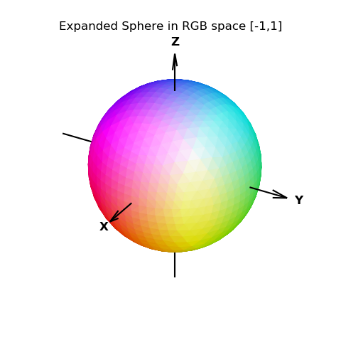

Functional RGB Color Mapping¶
This example is based on the Matplotlib function used in the RGB volumetric plot example. RGB space is more clearly illustrated in the Color Space example and the RGB Mapping animation.
import numpy as np
import matplotlib.pyplot as plt
import s3dlib.surface as s3d
#.. Functional RGB Color Mapping
# 1. Define functions to examine ....................................
def rgbColor(rtp) :
x,y,z = s3d.SphericalSurface.coor_convert( rtp, tocart=True )
# now, map xyz from [-1,1] to RGB space in [0,1]
R = ( x + 1 ) /2.0
G = ( y + 1 ) /2.0
B = ( z + 1 ) /2.0
return R,G,B # all values are in [0,1]
# 2. Setup and map surfaces .........................................
rez = 4
expand = np.sqrt(3)
surface = s3d.SphericalSurface(rez, basetype='octa')
surface.transform(scale=expand) # expand radius to RGB corners.
surface.map_color_from_op(rgbColor)
surface.transform(scale=1/expand) # contract back to [-1,1]
surface.shade(.7)
# 3. Construct figure, add surfaces, and plot ......................
fig = plt.figure(figsize=plt.figaspect(1))
ax = plt.axes(projection='3d')
ax.set(xlim=(-1,1), ylim=(-1,1), zlim=(-1,1))
ax.set_title('Expanded Sphere in RGB space [-1,1]')
s3d.standardAxis(ax, offset=1.0)
ax.add_collection3d(surface)
fig.tight_layout()
plt.show()
Note
Once transformed from rtp coordinates, the color is simply a result of using the XYZ coordinates in RGB space. Since the sphere is initially expanded, the RGB colors are clipped to the range [0,1].